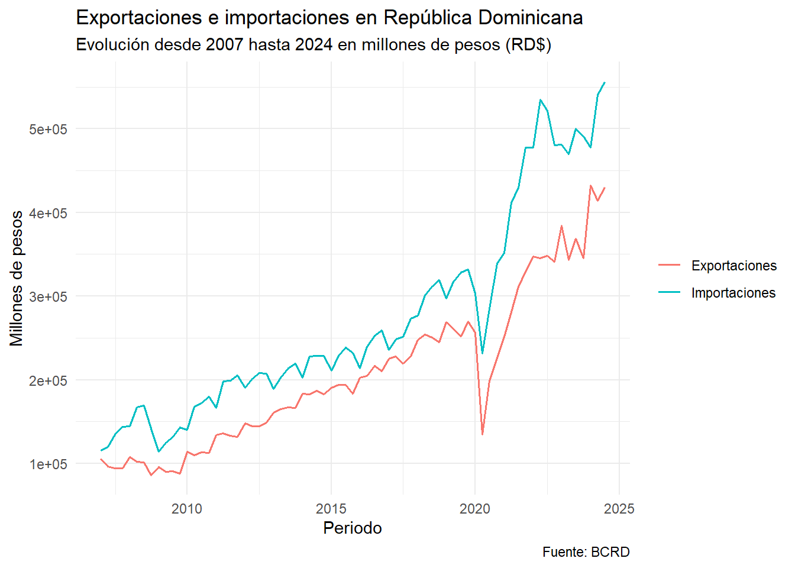
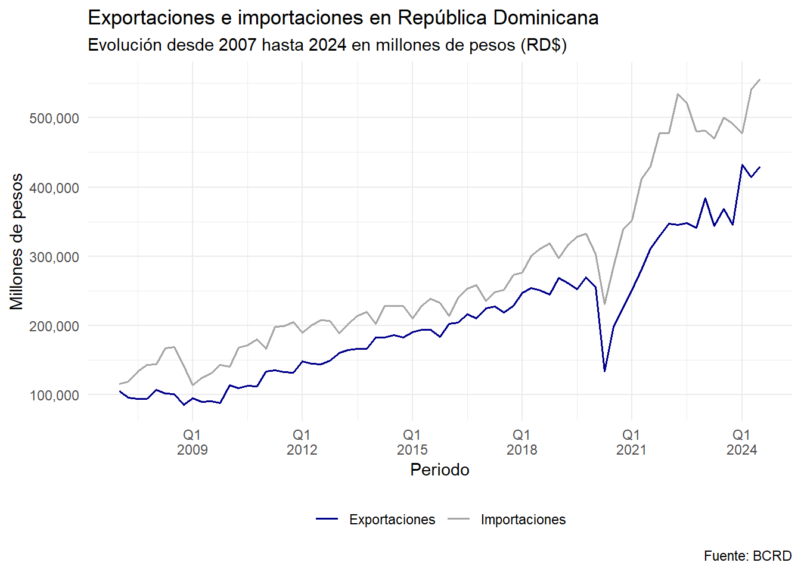
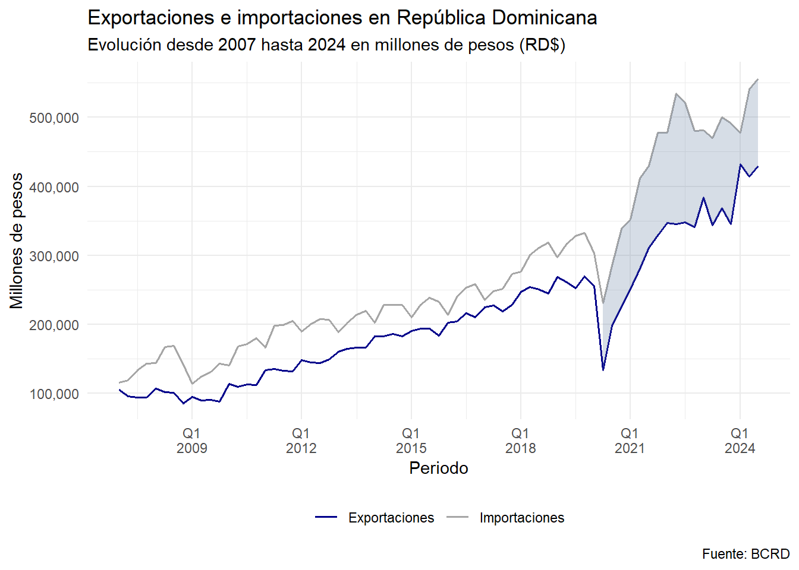
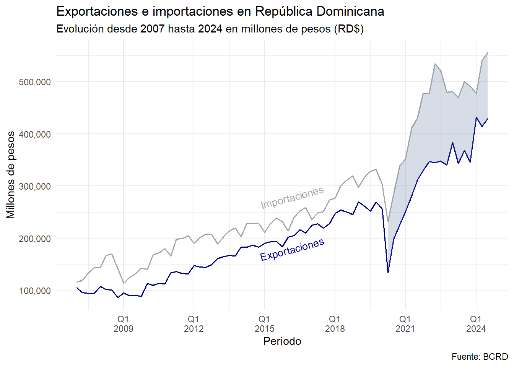

Code
library(tidyverse)
pib_gasto <- databcrd::get_pib_gasto(
modalidad = "nominal",
acumulado = FALSE,
homogenea_91 = FALSE
)
exportaciones_importaciones <- pib_gasto |>
filter(
partida %in% c("Exportaciones", "Importaciones")
)José Burgos
Muchas personas no suelen dedicar tiempo a la estética de los gráficos al realizar análisis en RStudio, y es comprensible. Mejorar la apariencia de un gráfico, especialmente cuando se utiliza ggplot2, puede ser una tarea que requiere tiempo, y a menudo, no se percibe como una prioridad. Sin embargo, la presentación visual es clave para comunicar resultados de manera efectiva. Por eso, en este blog comenzaré a compartir algunas ideas y ajustes que puedes implementar en tus gráficos con ggplot2 para elevar la calidad de tus reportes.
En esta publicación, utilizaremos el paquete databcrd, desarrollado por Johan Rosa1, una figura destacada en la programación con R en RD. Este paquete, disponible en su perfil de GitHub (“Johan-rosa/databcrd”), es sencillo de instalar y usar. Su principal propósito es permitir la descarga remota y en tiempo real de datos del Banco Central de la República Dominica. Además, estos datos están adaptados para facilitar su uso en análisis realizados en RStudio.
Con estos pasos puede utilizar el paquete databcrd:
Instalar el paquete devtools.
Ejecutar en la consola devtools::install_github("Johan-rosa/databcrd", force = TRUE)
Luego de instalar el paquete solo es cargarlo o llamarlo de manera explicita, esta última es la que usaremos en este post para que el lector conozca mejor las funciones.
Vamos a descargar el PIB de República Dominicana, con la función get_pib_gasto , los parámetros determinados son los siguientes:
Nos centraremos en las exportaciones e importaciones para nuestro ejercicio de visualización. Crearemos un gráfico sencillo que muestre su evolución, asegurándonos de incluir los elementos básicos que todo gráfico debe tener: un título claro, la fuente de los datos y las etiquetas correspondientes en los ejes.
plot_bas_exp_impor <- exportaciones_importaciones |>
ggplot() +
geom_line(aes(fecha, pib_nominal, color = partida), size = .7) +
labs(title = "Exportaciones e importaciones en República Dominicana",
subtitle = "Evolución desde 2007 hasta 2024 en millones de pesos (RD$)",
caption = "Fuente: BCRD", color = NULL,
y = "Millones de pesos", x = "Periodo") +
theme_minimal()
plot_bas_exp_impor
En el ejemplo anterior realizamos algunos ajustes básicos al gráfico, pero si deseamos presentarlo a nuestro jefe o a un público más exigente, sería conveniente incorporar algunos cambios adicionales para mejorar su claridad y estética.
Primero, notamos que el eje y está en notación científica, lo cual puede no ser muy intuitivo para todos los espectadores. Convertirlo a una escala numérica más legible facilitará su interpretación. Además, dado que los datos tienen una frecuencia trimestral, sería ideal ajustar el eje x para reflejar esta periodicidad de manera más precisa.
Por otro lado, las etiquetas de las series, “Exportaciones” e “Importaciones”, ocupan un espacio considerable en el gráfico. Existen diversas formas de optimizar esto: podemos colocarlas horizontalmente debajo del eje temporal o, como haremos aquí, incluirlas directamente dentro del gráfico para ahorrar espacio y mejorar la organización visual. Finalmente, los colores predeterminados de ggplot2 no siempre son los más elegantes. Cambiar la paleta de colores ayudará a que el gráfico tenga un aspecto más profesional y atractivo.
plot_avance <- plot_bas_exp_impor +
scale_y_continuous(labels = scales::comma) + # Manipulando el eje y
scale_x_date( # Eje x
labels = \(x) paste0("Q", quarter(x), "\n", year(x)), # Aquí creamos una función anónima para darle un flow personalizado
breaks = "3.5 year" # Con esta opción manipulamos los brakes de las fechas
) +
scale_color_manual(values = c("darkblue", "gray65")) + # Cambiando los colores
theme(legend.position = "bottom", text = element_text(family = "Georgia"))
plot_avance
Podemos sombrear en el gráfico después del covid, para enfocar la atención a nuestro publico, como ha evolucionado nuestras variables después del periodo de la pandemia.
Para esto vamos a filtrar nuestra base de datos en la fecha que nos interesa y cambiar la estructura para que sea más fácil hacer el sombreado.

Hasta ahora, hemos realizado varias mejoras en nuestro gráfico, pero aún podemos optimizar su apariencia. Una forma de hacerlo es colocando las etiquetas de las series directamente dentro del gráfico. Para lograr esto, utilizaremos la función annotate, que nos permite agregar texto personalizado en posiciones específicas del gráfico. Además, podremos ajustar el tamaño, color y posición del texto para que se integre de manera armoniosa con el diseño general.
# En este caso, como debemos probar varias veces,
# con algunos ajuste hasta que las anotaciones queden organizada,
# es de gran ayuda crear una función
anotaciones <- function(x = "2016-03-01", y, label, color){
ggplot2::annotate("text",
x = as.Date(x), y = y,
label = label, size = 3.5,
colour = color, angle = 15)
}
plot_avance1 +
anotaciones(y = 18e4, label = "Exportaciones", color = "darkblue") +
anotaciones(y = 28e4, label = "Importaciones", color = "gray65") +
theme(legend.position = "none")
Como mencioné al inicio, realizar este tipo de ajustes en los gráficos puede ser una tarea exigente en términos de tiempo, pero cada mejora vale la pena. La buena noticia es que podemos crear funciones personalizadas que automatizan estos ajustes, lo que nos permitirá ahorrar tiempo en futuros proyectos y producir gráficos más comunicativos de manera eficiente.
Existen numerosos recursos en Internet que pueden ser de gran utilidad para inspirarnos y aprender sobre distintos tipos de gráficos para nuestros reportes. Además, RStudio ofrece herramientas de ayuda integradas, como el uso del signo de interrogación antes de una función (por ejemplo, ?theme), para consultar la documentación oficial y explorar todas las opciones de personalización disponibles.
Finalmente, aunque contamos con el apoyo de la inteligencia artificial, es fundamental tener un conocimiento previo que nos permita entender y materializar lo que queremos crear. La IA es una herramienta poderosa para optimizar nuestras tareas, pero no puede sustituir el esfuerzo, la creatividad y el criterio humano necesarios para generar resultados realmente efectivos.
Wickham, H., & Grolemund, G. (n.d.). ggplot2: Elegant graphics for data analysis. Recuperado de https://ggplot2-book.org/
R Graph Gallery. (n.d.). The R graph gallery: Help and inspiration for R charts. Recuperado de https://r-graph-gallery.com/
Banco Central de la República Dominicana. (n.d.). Datos del Banco Central de la República Dominicana. Recuperado de https://www.bancentral.gov.do/
Puede echarle un vistazo a su blog personal: https://www.johan-rosa.com/↩︎